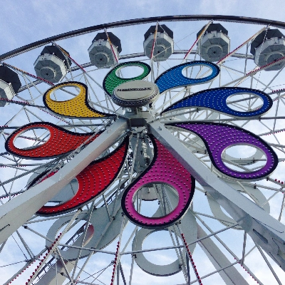
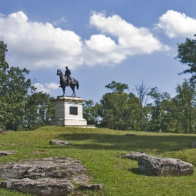
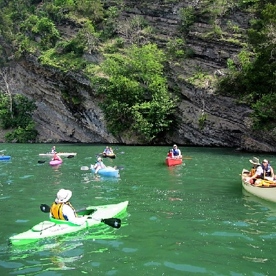
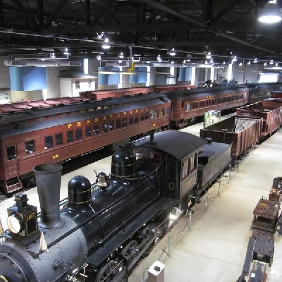
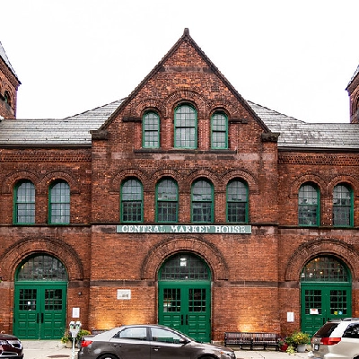
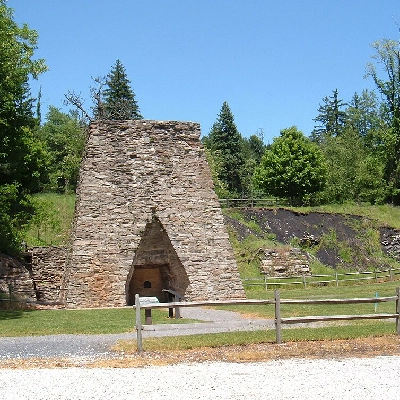
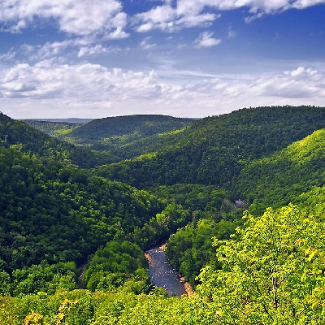

Also known as Pine Creek Gorge, this natural wonder features stunning vistas, hiking trails, and opportunities for outdoor recreation. [1]

Hersheypark
A renowned amusement park featuring exciting rides, live entertainment, and an opportunity to learn about chocolate-making at Hershey's Chocolate World.

Gettysburg National Military Park
Site of the pivotal Battle of Gettysburg during the Civil War, offering guided tours, historic monuments, and a visitor center with exhibits. [2]
Pennsylvania State Capitol
An impressive architectural gem in Harrisburg showcasing exquisite artwork, stunning interiors, and guided tours to learn about the state's government and history. [3]

Raystown Lake
A scenic reservoir near Huntingdon, offering boating, fishing, hiking, and camping amid picturesque landscapes and water activities.

Railroad Museum of Pennsylvania
Located in Strasburg, this museum boasts an extensive collection of vintage locomotives, rail cars, and exhibits, showcasing the rich history of railroading. [4]

Central Market York
The oldest continuously operating farmers' market in the U.S., offering a bustling atmosphere, local produce, crafts, and diverse food vendors. [5]

Pine Grove Furnace State Park
Serving as the "Gateway to the Appalachian Trail," this park offers hiking, picnicking, and swimming opportunities, along with historic features and natural beauty. [6]

Worlds End State Park
Situated in the Endless Mountains, this park is known for its rugged beauty, with hiking trails, waterfalls, and breathtaking views of the Loyalsock Creek Gorge. [7]
{kind=link}
{kind=link}
{kind=link}